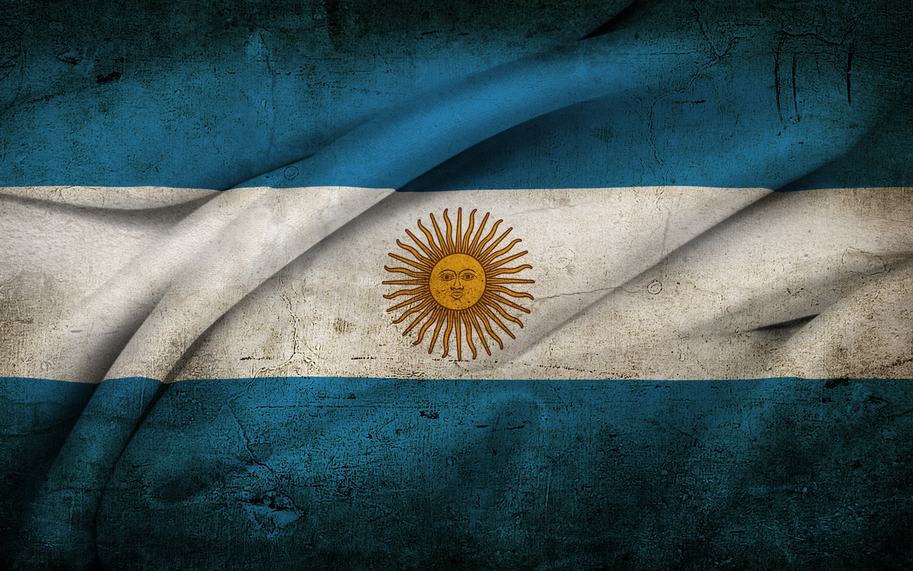
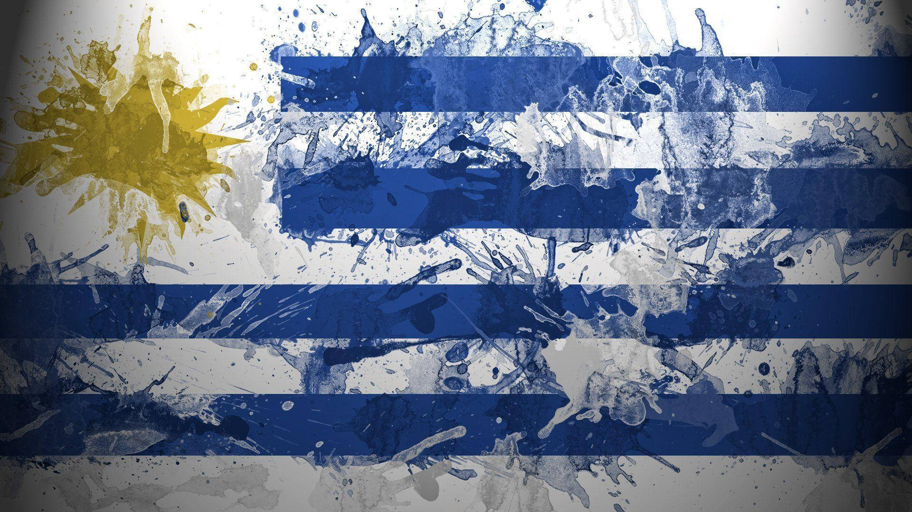

| Brasil | Argentina | Uruguai |
|---|

O Brasil é o maior país da América do Sul e o quinto maior do mundo tanto em área territorial quanto em população. Com uma extensão de mais de 8,5 milhões de quilômetros quadrados, o território brasileiro abriga uma impressionante diversidade geográfica, cultural e biológica. Com mais de 210 milhões de habitantes, o Brasil é uma nação vibrante, marcada por contrastes, riquezas naturais exuberantes e uma história complexa.
O território brasileiro é composto por uma variedade de paisagens que incluem florestas tropicais, planaltos, serras, campos e extensas bacias hidrográficas. O país é banhado pelo Oceano Atlântico em toda a sua costa leste, que se estende por cerca de 7.400 km. Uma das características mais marcantes do Brasil é a Floresta Amazônica, a maior floresta tropical do mundo, responsável por abrigar milhões de espécies de plantas, animais e insetos, muitas das quais ainda não foram completamente catalogadas pela ciência.
Além da Amazônia, o Brasil possui outros biomas importantes como o Cerrado, a Mata Atlântica, o Pantanal, a Caatinga e os Pampas. Cada um desses ecossistemas possui características únicas e desempenha um papel essencial na regulação do clima e na conservação da biodiversidade global.
O Brasil foi oficialmente "descoberto" pelos portugueses em 22 de abril de 1500, quando a expedição liderada por Pedro Álvares Cabral chegou às suas terras. A colonização portuguesa deixou marcas profundas na cultura brasileira, incluindo o idioma, a religião (com predominância do catolicismo) e várias tradições sociais.
Durante os primeiros séculos de colonização, o Brasil foi palco da exploração do pau-brasil, da cana-de-açúcar, da mineração e, mais tarde, do ciclo do café. A escravidão africana desempenhou um papel central na economia colonial e deixou uma herança cultural e social que influencia profundamente o país até os dias atuais. A independência foi proclamada em 1822, e o Brasil se tornou um império sob Dom Pedro I. Em 1889, o país se transformou em uma república.
A Argentina é o segundo maior país da América do Sul, ficando atrás apenas do Brasil, e o oitavo maior do mundo em extensão territorial. Com uma geografia diversificada, uma cultura vibrante e uma história rica, o país desempenha um papel importante tanto no continente quanto no cenário internacional. Sua capital, Buenos Aires, é considerada uma das cidades mais charmosas da América Latina, conhecida por sua arquitetura europeia, vida cultural intensa e influência artística marcante.
O território argentino se estende por cerca de 2,78 milhões de quilômetros quadrados, fazendo fronteira com países como Chile, Bolívia, Paraguai, Brasil e Uruguai. O país é caracterizado por uma diversidade impressionante de paisagens: desde as geleiras da Patagônia e os picos andinos do oeste, até os pampas férteis da região central e as florestas subtropicais do norte.
A Cordilheira dos Andes marca a fronteira oeste com o Chile e abriga o Aconcágua, a montanha mais alta das Américas. No extremo sul, a Patagônia oferece paisagens desérticas, lagos glaciais e ventos intensos. Já o norte argentino possui clima mais quente e úmido, ideal para a produção agrícola.
Antes da chegada dos espanhóis no século XVI, o território argentino era habitado por diversas populações indígenas, como os guaranis, os diaguitas e os mapuches. A colonização espanhola impôs mudanças profundas à região, especialmente com a introdução do catolicismo e da língua espanhola.
A Argentina declarou sua independência da Espanha em 9 de julho de 1816. O processo de formação do Estado argentino foi marcado por conflitos internos entre unitários e federalistas, além de disputas com países vizinhos. Ao longo dos séculos XIX e XX, o país passou por períodos de crescimento econômico, imigração europeia em massa (especialmente italiana e espanhola), e instabilidade política, incluindo golpes de Estado e ditaduras militares.
A cultura argentina é uma das mais ricas da América Latina, fruto da fusão entre tradições indígenas, espanholas, africanas e, principalmente, da imigração europeia. O tango, gênero musical e dança nascido nos bairros populares de Buenos Aires no final do século XIX, é um dos símbolos mais representativos do país e foi declarado Patrimônio Cultural Imaterial da Humanidade pela UNESCO.
O Uruguai é um dos menores países da América do Sul em extensão territorial, mas é também um dos mais desenvolvidos, organizados e democráticos da região. Com uma população de cerca de 3,5 milhões de habitantes, o país se destaca por sua qualidade de vida, políticas sociais avançadas, estabilidade institucional e uma cultura rica e acolhedora. Localizado entre os dois gigantes sul-americanos — Brasil e Argentina —, o Uruguai construiu uma identidade própria, marcada por sua forte tradição democrática, sua paixão pelo futebol e seu estilo de vida tranquilo.
O território uruguaio se estende por cerca de 176 mil km², fazendo fronteira ao norte e nordeste com o Brasil, a oeste com a Argentina (separado pelo Rio Uruguai) e com o Oceano Atlântico a sudeste. A capital, Montevidéu, é a cidade mais populosa e o principal centro econômico, político e cultural do país.
A paisagem do Uruguai é dominada por campos e colinas suaves, conhecidas como cuchillas, ideais para a criação de gado. O país possui rios, lagos e uma extensa costa atlântica, com praias muito procuradas por turistas, como as de Punta del Este, Piriápolis e La Paloma.
O clima é subtropical úmido, com estações bem definidas. Os verões são quentes e agradáveis, enquanto os invernos podem ser frios, especialmente com os ventos vindos da Antártida.
Antes da colonização europeia, o território uruguaio era habitado principalmente pelo povo indígena charrua. No século XVI, a região passou a ser disputada por espanhóis e portugueses, devido à sua posição estratégica entre os domínios coloniais de ambos os impérios.
O Uruguai foi cenário de muitos conflitos durante o período colonial e no processo de independência. Foi incorporado ao Brasil como a Província Cisplatina entre 1821 e 1828, mas após diversas batalhas, conseguiu sua independência em 25 de agosto de 1825, consolidada em 1828 com a mediação da Grã-Bretanha.
| Topo | Brasil | Argentina | Uruguai |
|---|